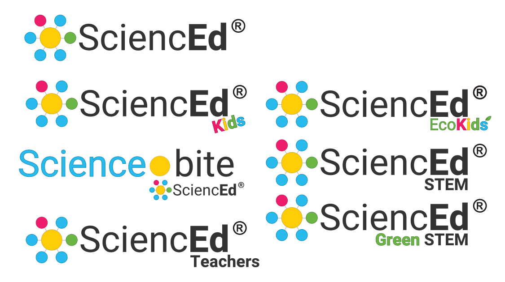
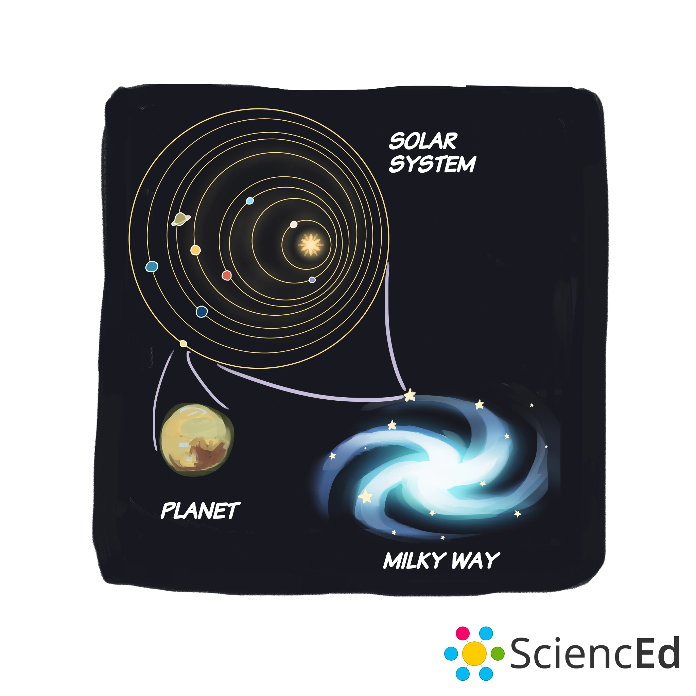
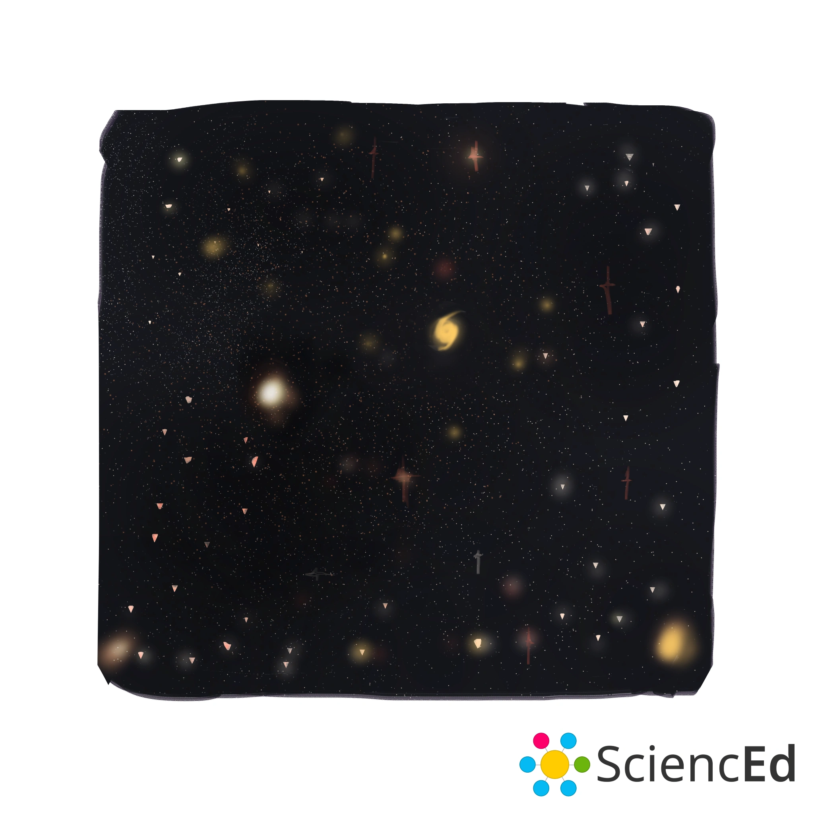
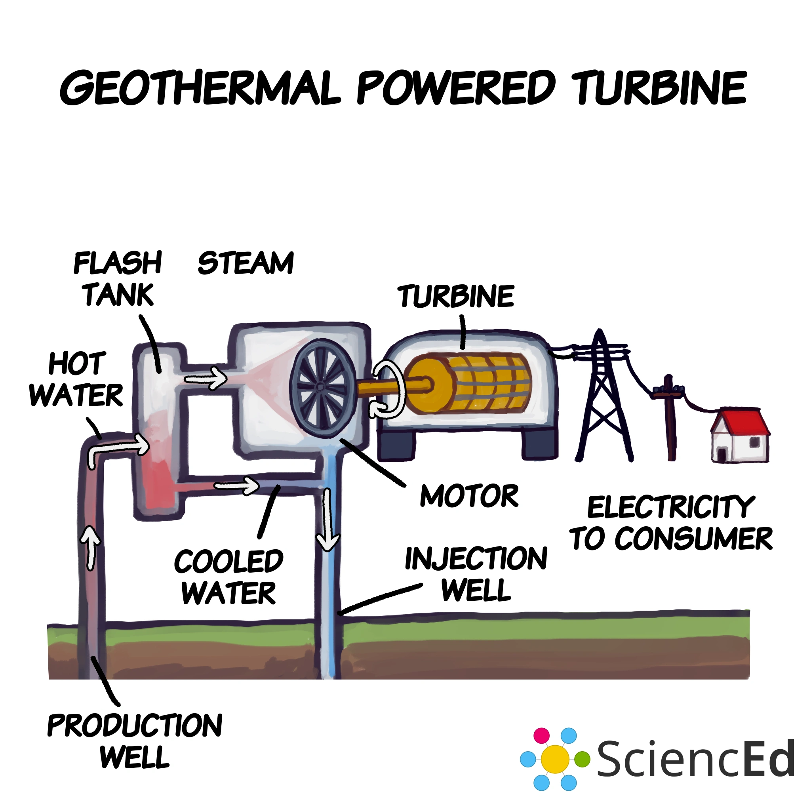
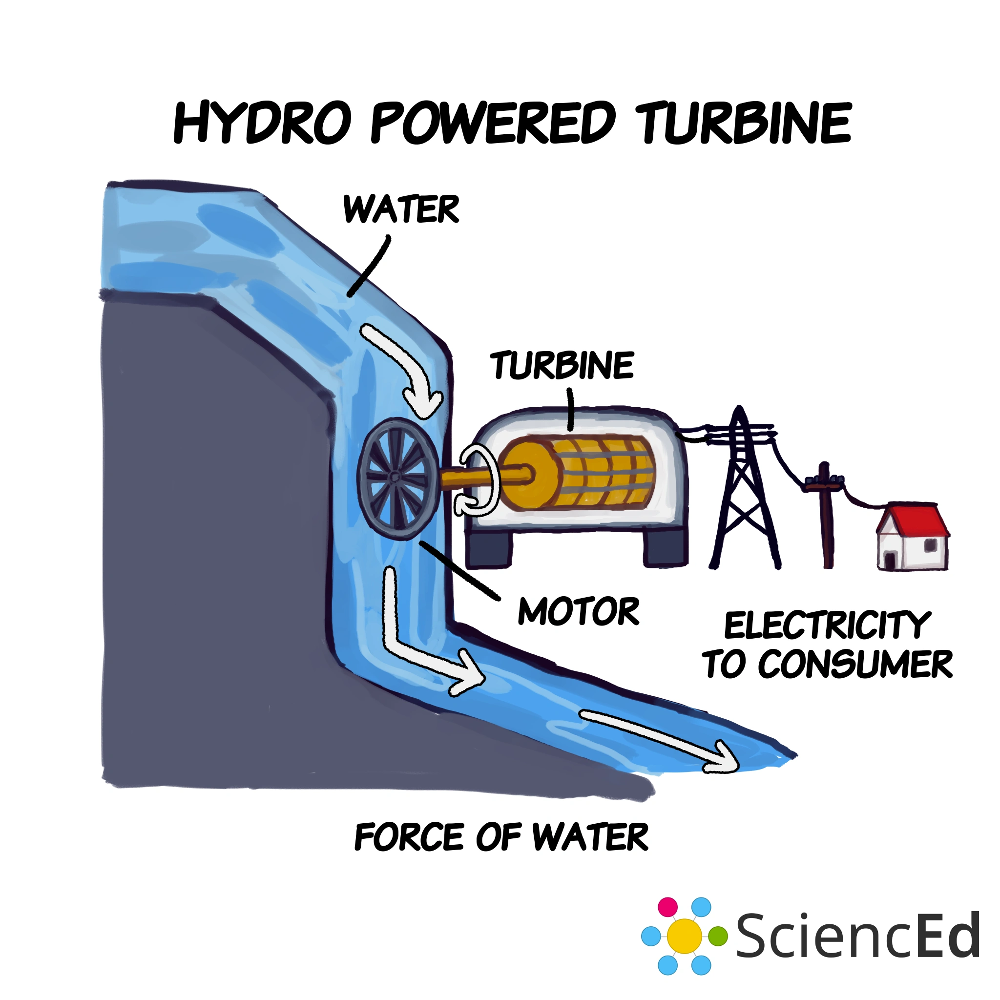
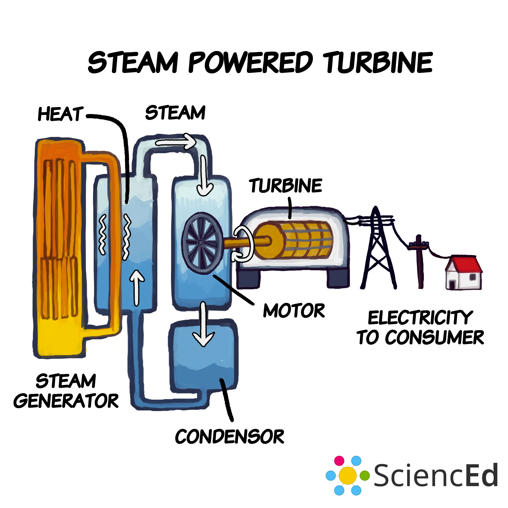
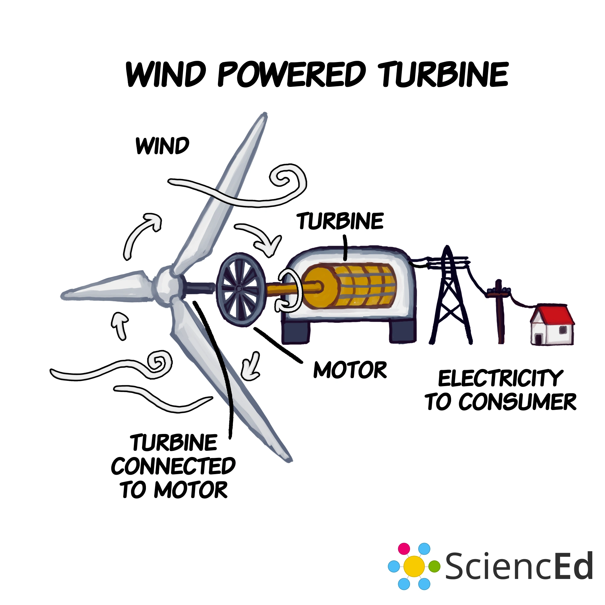

SciencEd mit Marti Hendrichs
Project Overview
Seit 2019 / Auftragsarbeit / Graphics, Branding, und Animationen / Kollaboration Projekt
Animationen und Diagramme für SciencEd als Teil für Learning Content.
Development
- Die benötigte Referenzen von Marti wurde zu Diagramme und Animationen nach spezifischen Details der Klientin produziert.
- Die Animationen sind klein, sodass man sie in Videos und Präsentationen leicht einfügen kann.
Branding


Logos

SciencEd Intros
Animationen Beispiele
Bienenbestäubung
Bienenwackel
Blumen Bestäubung
Anatomie der Blume
Oberfläche des Wasser Molikularenstruktur
Wasser Molikularenstruktur
Diagramme Beispiele







